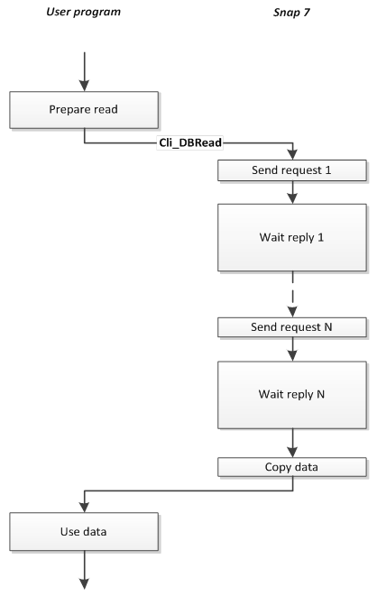
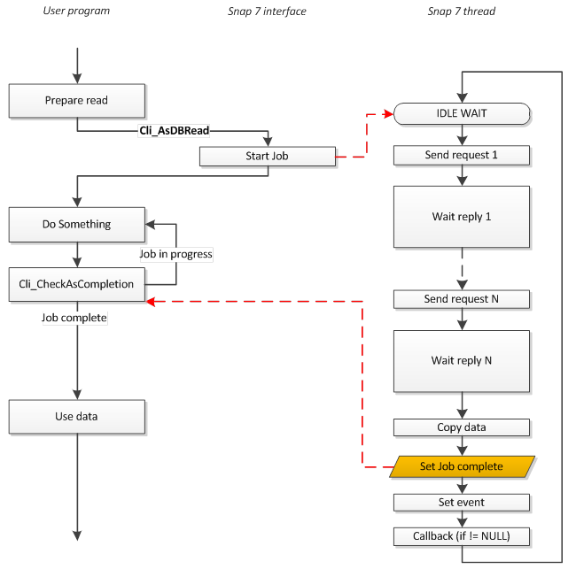
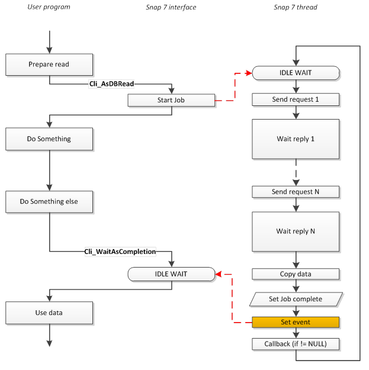
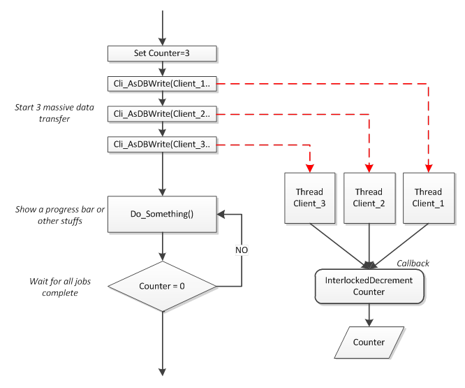

Původní text
Ohodnoťte tento překlad
Vaše zpětná vazba bude použita k vylepšení Překladače Google
A PLC client is the most well-known object, almost all PLC communication drivers on the market are clients.
Into S7 world, LibNoDave, Prodave, SAPI-S7 (Simatic Net mn library) are clients.
The same OPC Server, despite to its name, is a client against the PLC.
Finally, Snap7Client is a Client.
It fulfills almost completely the S7 protocol, you can read/write the whole PLC memory (In/Out/DB/Merkers/Timers/Counters), perform block operations (upload/download), control the PLC (Run/Stop/Compress..), meet the security level (Set Password/Clear Password) and almost all functions that Simatic Manager or Tia Portal allows.
You certainly have a clear idea about its use, its functions and their use are explained in detail into the Client API reference of the Snap7 Manual.
What I think is important to highlight, is its advanced characteristics.
Snap7 library is designed keeping in mind large industrial time-critical data transfers involving networks with dozen of PLCs.
To meet this, Snap7Client exposes three interesting features : PDU Independence, SmartConnect and Asynchronous data transfer.
As said, every data packet
exchanged with a PLC must fit in a PDU, whose size is fixed and varies from
240 up to 960 bytes.
All Snap7 functions completely hide this concept,
the data that you can transfer in a single call depends only on the size of
the available data.
If this data size exceeds
the PDU size, the packet is automatically split across more subsequent
transfers.
When we try to connect to a generic server, basically two requirements must be met.
1. The hardware must be powered on.
2. A Server software listening for our connection must be running.
If the server is PC based, the
first condition not always implies the second.
But for specialist hardware firmware-based such as the PLC, the things are
different, few seconds after the power on all the services are running.
Said that, if we "can ping" a PLC we are almost sure that it can accept our connections.
The SmartConnect
feature relies on this principle to avoid the TCP connection timeout when a PLC
is off or the network cable is unwired.
Unlike the TCP connection timeout, The ping time is fixed and we can decide how
much it should be.
When we call Cli_ConnectTo(), or when an active Snap7Partner needs to connect, first the PLC is “pinged”, then, if the ping result was ok, the TCP connection is performed.
Snap7 uses two different ways to do this, depending on the platform:
Windows
The system library iphlpapi.dll is used, but it’s is loaded dynamically because it’s not officially supported by Microsoft (even if it is present in all platforms and now it’s fully documented by MSDN).
If its load fails (very rare case), an ICMP socket is created to perform the ping. We use it as B-plan since we need administrative privileges to create RAW sockets in Vista/Windows 7/Windows 8.
Unix (Linux/BSD/Solaris)
From 1.3.0 an Async (with timeout) TCP connection is used so root rights are no more needed.
During the initialization, the library checks if the ping can be performed trying the above methods.
If all they fail, SmartConnect is disabled and all the clients (or Active partners) created will try to connect directly.
Now let's see how to take full advantage of this feature.
Let's suppose that we have a Client that cyclically exchanges data into a thread and we want a fast recovery in case of network problems or PLC power.
In the thread body we could write something like this:
C++
|
while (!TerminateCondition()) { if (Client->Connected()) { PerformDataExchange(); sleep(TimeRate); // exchange time interval } else if (Client->Connect()!=0) sleep(10); // small wait recovery time }
//Supposing that TerminateCondition()is a bool function that //returns true when the thread needs to be terminated.
//In Unix you have to use nanosleep() instead of sleep()
or copy
|
Pascal
|
while not TerminateCondition do begin if Client.Connected then begin PerformDataExchange; Sleep(TimeRate); // exchange time interval end else if Client.Connect<>0 then Sleep(10); // small wait recovery time end;
//Supposing that TerminateCondition()is a boolean function that //returns true when the thread needs to be terminated.
|
In the examples are used the C++ and Pascal classes that you find into the wrappers.
A synchronous function, is executed in the same thread of the caller, i.e. it exits only when its job is complete. Synchronous functions are often called blocking functions because they block the execution of the caller program.
An asynchronous function
as opposite, consists of two parts, the first, executed in the same thread of
the caller, which prepares the data (if any), triggers the second part and
exits immediately.
The second one is executed in a separate thread and performs the body of the
job requested, simultaneously to the execution of the caller program.
This function is also called nonblocking.
The choice of using one or the other model, essentially depends on two factors:
1. How much the parallel job is granular than the activity of the CPU.
2. How much, the job execution time, is greater than the overhead introduced by the synchronization.
A S7 protocol job consists of:
· Data preparation.
· Data transmission.
· Waiting for the response.
· Decoding of the reply telegram.
Each block transmitted is called PDU (protocol data unit) which is the greatest block that can be handled per transmission.
The “max pdu size” concept belongs to the IsoTCP protocol and it’s negotiated during the S7 connection.
So, if our data size (plus headers size) is greater than the max pdu size, we need to split our packets and repeat the tasks of transmission and waiting.
“Waiting for the response” is the worst of them since it’s the longest and the CPU is unused in the meantime.
So, a S7 Job is definitely granular and could benefit from asynchronous execution.
“It could” because the advantage is zeroed by the synchronization overhead if the job consists of a single pdu.
The Snap7 Client supports both data flow models via two different set of functions that can be mixed in the same session:
Cli_<function name> and Cli_As<function name>.
The example in figure shows a call of Cli_DBRead that extends for more PDUs; during its execution the caller is blocked.

End of Job Completion
The asynchronous model in computer communications, however, has a great Achilles heel : the completion.
To understand:
The function is called, the job
thread is triggered, the function exits and the caller work simultaneously to
the thread.
At the end, we need to join the two execution flows, and to do this we need of a sort of
synchronization.
An inappropriate completion model can completely nullify the advantage of asynchronous execution.
Basically there are three completion models:
· Polling
· Idle wait
· Callback
There is no better than the others, it depends on the context.
Snap7 Client supports all three models, or a combination of them, if wanted.
The polling is the simplest : after starting the process, we check the Client until the job is finished.
K tomu používáme funkci Cli_CheckAsCompletion() ; po jejím zavolání se okamžitě ukončí a vrátí stav úlohy: dokončeno nebo probíhá.
Můžeme ho použít k tomu, abychom zabránili tomu, aby náš program přestal reagovat během přenosu velkého množství dat.

Dokončení nečinného čekání čeká na dokončení úlohy nebo na vypršení časového limitu. Během této doby je náš program blokován, ale CPU je volné pro provádění jiných úloh.
K dosažení tohoto cíle se používají specifické primitivy operačního systému (události, semafory atd.).
Funkce delegovaná na toto je Cli_WaitAsCompletion()

Metoda Callback je složitější:
Po ukončení úlohy se vyvolá uživatelská funkce (tzv. callback).
Abychom ho mohli použít, musíme klienta instruovat o callbacku (pomocí Cli_SetAsCallback() ) a dovnitř musíme napsat synchronizační kód.
Pokud se používá správně, tato metoda dokáže vyřešit problémy, které nelze vyřešit jinými knihovnami (jak uvidíme v souvislosti se Snap7Partner).
Na obrázku máme několik PLC a potřebujeme provést „změnu typu“ ve výrobní lince.
K tomu potřebujeme do každého PLC přenést novou velkou sadu pracovních parametrů.

Přestože se zpětné volání nachází v uživatelském programu, je voláno do vlákna Client, takže mějte na paměti, že volání jiné funkce Client uvnitř zpětného volání by mohlo vést k přetečení zásobníku.
Poznámka
InterlockedDecrement je synchronizační primitivum přítomné ve Windows/Unixu, které provádí atomické snížení hodnoty proměnné o jednu.
Jak již bylo řečeno, protokol S7 je páteří komunikace společnosti Siemens.
Mnoho hardwarových komponent vybavených ethernetovým portem může komunikovat přes protokol S7, samozřejmě však ne splňují všechny požadavky protokolu (stahování FC do CP343 by se zdálo zvláštní).
Procesor S7 300/400/WinAC
Plně podporují protokol S7.
Procesor S7 1200/1500
Používají upravený protokol S7 s rozšířeným telegramem, řada 1500 má pokročilé bezpečnostní funkce (například šifrované telegramy), nicméně mohou pracovat v režimu kompatibility 300/400 a některé funkce lze provádět, viz také poznámky k S71200/1500 .
S7 200/LOGO 0BA7
Podporováno od Snap7 1.1.0
Tyto PLC mají odlišný přístup.
Podrobný popis jejich použití se Snap7 naleznete v kapitolách S7 200 a
LOGO 0BA7 .
Pohony SINAMICS
Je možné komunikovat s interním CPU a měnit parametry pohonu, u některých modelů (například G120) je také možné měnit parametry pohonu.
Způsob, jak zjistit, co je možné s daným modelem dělat, je vyhledat, co je možné dělat s HMI panelem/SCADA, protože Snap7 umí totéž.
CP (komunikační procesor)
Je možné s nimi komunikovat a vidět jejich interní SDB, i když to není tak užitečná věc, nebo můžete pro účely ladění použít informace SZL.
Seznam částečné kompatibility protokolu S7 (viz také § LOGO a S7200)
|
|
Procesor |
CP |
ŘÍDIT |
|||||
|
|
300 |
400 |
WinAC |
Snap7S |
1200 |
1500 |
343/443/IE |
SINAMICS |
|
Čtení/zápis databáze |
THE |
THE |
THE |
THE |
THE |
( 3) |
- |
THE |
|
EB čtení/zápis |
THE |
THE |
THE |
THE |
THE |
THE |
- |
THE |
|
AB Čtení/Zápis |
THE |
THE |
THE |
THE |
THE |
THE |
- |
THE |
|
MK čtení/zápis |
THE |
THE |
THE |
THE |
THE |
THE |
- |
- |
|
Čtení/zápis TM |
THE |
THE |
THE |
THE |
- |
- |
- |
- |
|
CT čtení/zápis |
THE |
THE |
THE |
THE |
- |
- |
- |
- |
|
Přečtěte si SZL |
THE |
THE |
THE |
THE |
THE |
THE |
THE |
THE |
|
Vícenásobné čtení/zápis |
THE |
THE |
THE |
THE |
THE |
THE |
- |
THE |
|
Adresář |
THE |
THE |
THE |
THE |
- |
- |
THE |
(2) |
|
Datum a čas |
THE |
THE |
THE |
THE |
- |
- |
- |
THE |
|
Řízení Spuštění/Zastavení |
THE |
THE |
THE |
THE |
- |
- |
(1) |
THE |
|
Zabezpečení |
THE |
THE |
THE |
THE |
- |
- |
- |
- |
|
Blokovat nahrání/smazání/odstranění |
THE |
THE |
THE |
- |
- |
- |
THE |
THE |
Snap7S = Snap7Server
(1) Po příkazu „Stop“ se spojení přeruší, je nutná sekvence Stop/Run CPU.
(2) Jsou k dispozici a přístupné robustní databáze , adresář zobrazuje pouze SDB.
(3) Viz poznámky k S71200/1500.
Externí zařízení může přistupovat k CPU S71200/1500 pomocí „základního“ protokolu S7 a funguje pouze jako HMI, tj. je povolen pouze základní přenos dat.
Všechny ostatní operace PG (ovládání/adresář/atd.) musí dodržovat rozšířený protokol, který (zatím) není v Snap7 pokryt.
Zejména pro přístup k databázi v S71500 je nutné provést některá další nastavení na straně PLC.
1.
Přístup je možný pouze ke globálním databázím.
2.
Optimalizovaný přístup k blokům musí být vypnut.
3.
Úroveň přístupu musí být „plná“ a „mechanismus připojení“ musí umožňovat GET/PUT.
Podívejme se na tato nastavení v TIA Portal V12
Vlastnost DB
V levém panelu v části „Programové bloky“ vyberte databázi a stiskněte Alt-Enter (nebo v kontextové nabídce vyberte „Vlastnosti…“).
Zrušte zaškrtnutí políčka Optimalizovaný přístup k blokům, ve výchozím nastavení je zaškrtnuto.
Ochrana
V levém panelu vyberte projekt CPU a stiskněte Alt-Enter (nebo v kontextové nabídce vyberte „Vlastnosti…“).
V položce Ochrana vyberte „Plný přístup“ a zaškrtněte „Povolit přístup pomocí PUT/GET …“, jak je znázorněno na obrázku.
V projektu Snap7 je TSnap7MicroClient předkem třídy TSnap7Client .
Není exportován, tj. nelze na něj odkazovat zvenčí knihovny, a jediný způsob, jak ho použít, je vložit ho do zdrojového kódu C++.
TSnap7MicroClient implementuje tělo všech úloh klienta S7 a synchronních funkcí rozhraní.
Exportovaný TSnap7Client pouze přidává zbývající asynchronní funkce, ale nezavádí žádné nové chování S7.
Proč mluvíme o interním objektu?
Mikro klient je nezávislý na vláknech a spoléhá pouze na vrstvu socketů, tj. vložili byste ho do zdrojového kódu, pokud:
· Vaše aplikace poběží v mikrooperačním systému bez vláken.
· Vaše aplikace bude běžet v reálném čase v operačním systému (například QNX) nebo v operačním systému, který nemá standardní vrstvu vláken (ani Windows, ani POSIX). V tomto případě můžete vytvořit nativní vlákno a v něm používat mikroklienta.
„Extrapolace“ mikro klienta je zajištěna návrhem, existuje dobře definovaná skupina nezávislých souborů, které lze použít.
Další informace naleznete v kapitole Vkládání mikroklienta Snap7 .